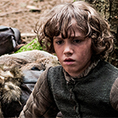

The Starks of Winterfell
Rickon Stark
|  | Rickon is the third son and fifth child of Lady Catelyn and Lord Eddard Stark, head of House Stark and Warden of the North. He was born and raised at Winterfell. Rickon has two older brothers Robb and Bran. He has two older sisters, Sansa and Arya. He also has a bastard half-brother, Jon Snow. Rickon is three year old, but fierce and strong for his age. Little is known about Rickon outside of this. |